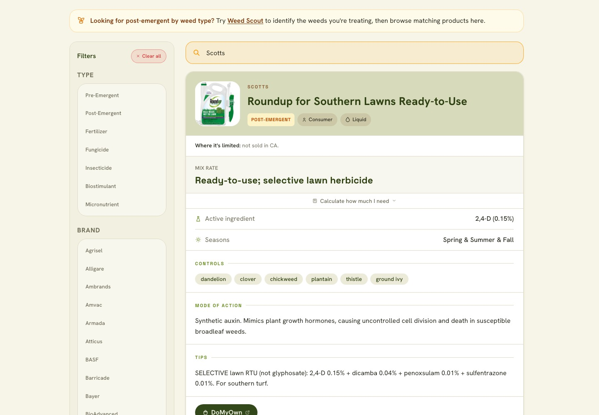
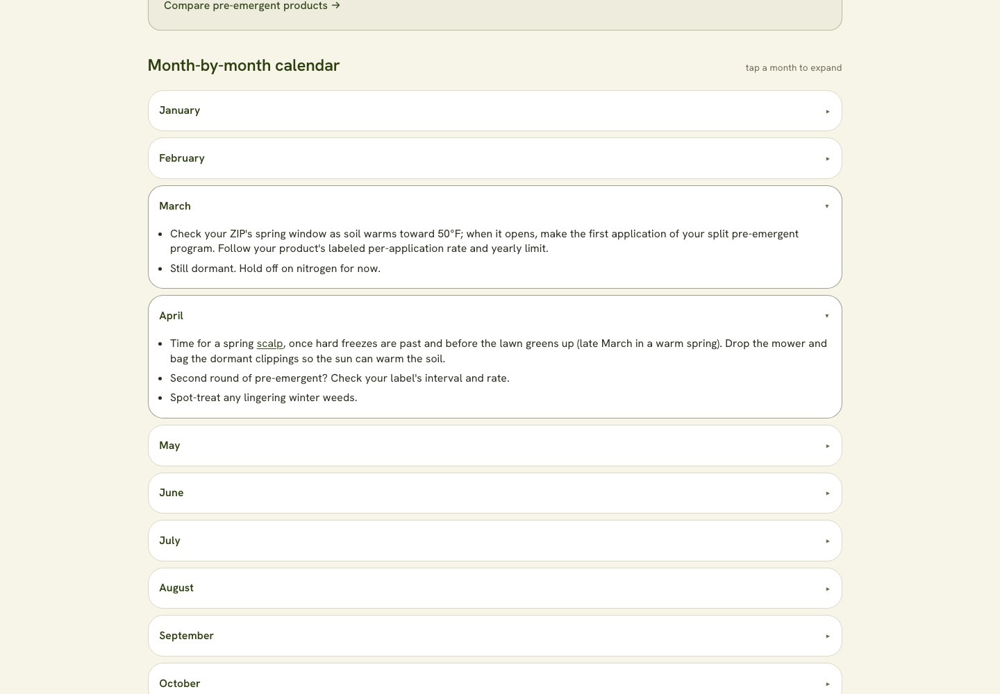

Regional profiles
Grass characteristics and local conditions inform the advice.
Growing a weather-driven lawn-care application into a service with personalized plans, SMS alerts, and verifiable releases.
A closer look
Public product views from TurfTrigger. Select an image to open the full-size screenshot.



The knowledge base
The engine combines local conditions, regional context, user preferences, and recorded activity with shared decision rules.
Grass characteristics and local conditions inform the advice.
Structured plans support climate-appropriate timing.
A curated catalog supports product-selection surfaces.
Reference data supports regression checks on the advice.
Profiles and rules inform live decisions, while plan content, product information, and safety checks support different parts of the system. SMS delivery adds consent, local-time, and delivery-state checks.
01 / Context
TurfTrigger addresses a practical question: when do local conditions support a lawn-care action? It turns weather data and regional rules into timing guidance, season plans, and SMS alerts, with email delivery also supported.
I am the sole project owner and human contributor. My responsibility spans requirements, priorities, service integration, access configuration, validation, release decisions, and ongoing operation.
I used AI agents throughout coding, research, troubleshooting, testing, and design. My role is directing that work around the product’s requirements and taking responsibility for the resulting service. The repository records repeated cycles of implementation, evaluation, correction, and regression coverage.
The working method
Agent-assisted development, supported by documented requirements, review notes, automated checks, and investigation of actual behavior.
The frontend presents decisions and records user actions. Python services own decision rules and scheduled processing. Plans and alerts share rule functions, with replay checks to detect disagreement.
02 / Development
The project grew from a local lookup into a service with personalized guidance, scheduled processing, and operational checks.
03 / Design challenge
As the product expanded across regions, grass types, and seasons, a rule change could affect a schedule, a status display, an email, and a later follow-up. Separate versions of a decision could drift apart.
The implementation moved shared decision functions into a canonical rule layer. Historical replay checked the relationships between plans and alerts. User actions added another constraint: a logged application should change what the system recommends next.
Timing studies also compared model output with dated observations. Regional differences mattered, so the resulting changes were regional rather than a single nationwide threshold adjustment.
Skills applied: Requirements decomposition, shared-rule design, regression analysis, and evaluating evidence with explicit uncertainty.
04 / Incident response
A scheduler retry exposed a duplicate-delivery risk during startup. Concurrent workers could read the same delivery state before either recorded completion.
An atomic claim now lets a worker reserve the job’s time slot. Competing invocations skip the work; a raised failure attempts to release the claim for retry.
Regression checks cover duplicate suppression, independent work, and retry behavior. Partial delivery and unexpected termination still require recovery procedures and recipient-level state.
Skills applied: Troubleshooting concurrency, understanding retry behavior, and defining recovery paths.
05 / Reliability
One documented failure involved a scheduled container job continuing to run stale code while other targets had been updated. A successful deployment command and fresh-looking output did not prove that every dependent workload had received the change.
Scheduled stages record a heartbeat after successful completion. Health checks look for missing or stale heartbeats. This covers a gap in error-only monitoring: a job that never starts may never emit an error.
Heartbeats include a release identifier read from the running revision. Post-deploy checks inspect runtime identifiers and active revision state. A shared hosted data asset is also checked against the bytes in the release commit.
This catches a subtle hosting failure: a hosting fallback can return a successful response with the wrong content. Verification needs to check the result as well as the status.
The deployment marker advances only after verification succeeds, so later change detection uses a verified baseline.
Skills applied: Cloud troubleshooting, service observability, release traceability, and change management.
06 / Administration
Firestore rules distinguish public read-only data, owner-scoped records, administrative access, and server-only fields. Clients cannot rewrite the state used for SMS check-ins or one-time welcome delivery, even when other fields on the same user record are writable.
Emulator-based security-rule tests run in CI. Deployment and recovery documentation also records configuration dependencies that cannot be reconstructed from source alone.
A complete end-to-end restore exercise remains outstanding. Recovery time and completeness remain unmeasured rather than assumed from the existence of backups.
07 / Validation
Historical-weather replay exercises the engine across a full season. A separate customer replay drives production processing entry points through injected providers, captures messages, and simulates user actions.
That distinction matters: generating an alert does not mean its instructions reached the customer. The offline release gate checks committed fixtures for issues including missing instructions, contradictory messages, and repeated application advice.
The limits are explicit. Hindsight weather differs from an issued forecast, and internally consistent decisions do not establish field accuracy.
Skills applied: Workflow testing, simulation, investigating delivery failures, and defining meaningful release checks.
08 / Engineering evidence
Versioned source, regression tests, workflow replay, and operational documentation support a technical discussion of the project’s decisions and tradeoffs.
This portfolio shares selected explanations and public product views. The application source remains private.